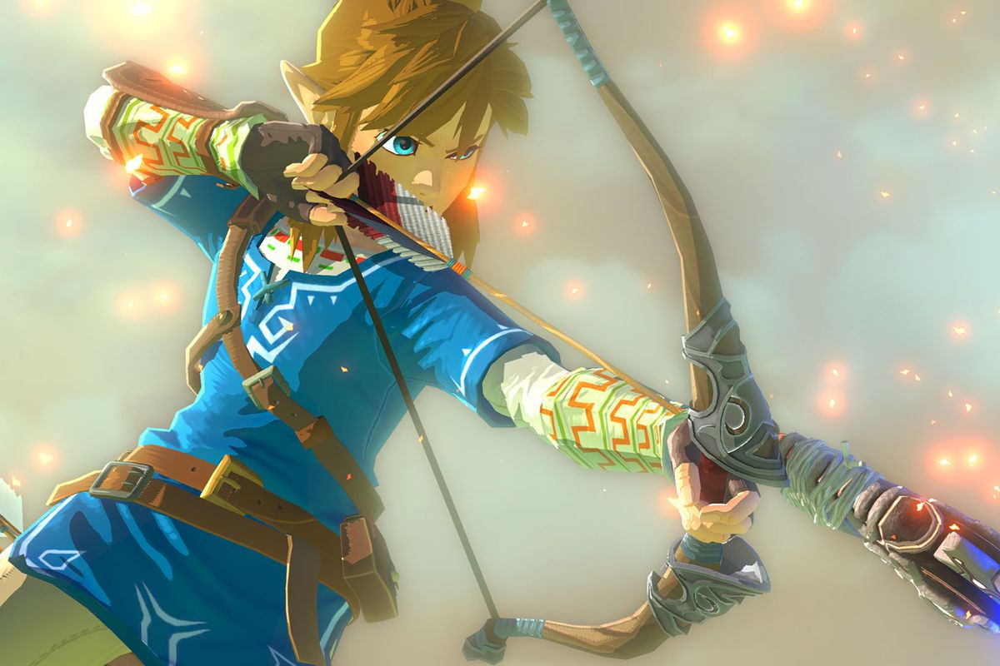
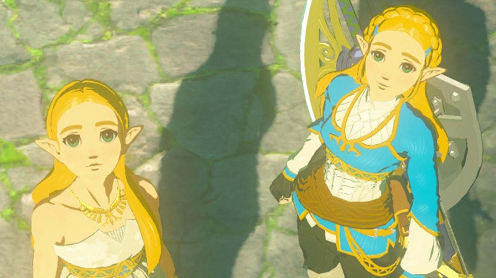

Link
Link is an expert with a bow, with his skill surpassing some of the Rito tribe's best archers. Using only his bow skills and special arrows, he was able to take down the Divine Beasts Vah Medoh, Vah Ruta, and Vah Naboris, letting him take control of them from the inside. When Link is airborne and aiming his bow, time seems to slow down around him to let him line up a good shot, and people watching him while he does this claim he draws his bow back too fast to follow.
Zelda
Princess Zelda is one of the three most important characters of The Legend of Zelda series, which is also why her name appears in the title of every game. Princess Zelda first appeared in the original The Legend of Zelda, and has since been featured in every subsequent game, with the exception of Link's Awakening. Each incarnation of the Princess is chosen by destiny to be the keeper of the Triforce of Wisdom in their respective eras, which is the main reason why they play such an integral role in the legends of Hyrule.
